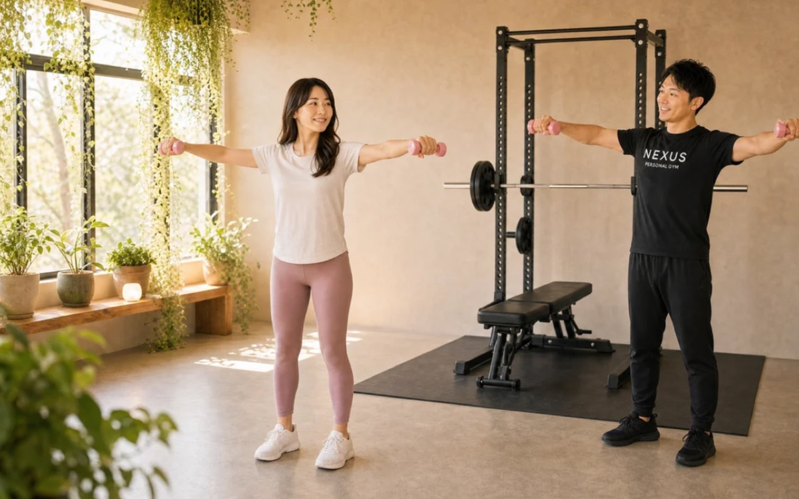
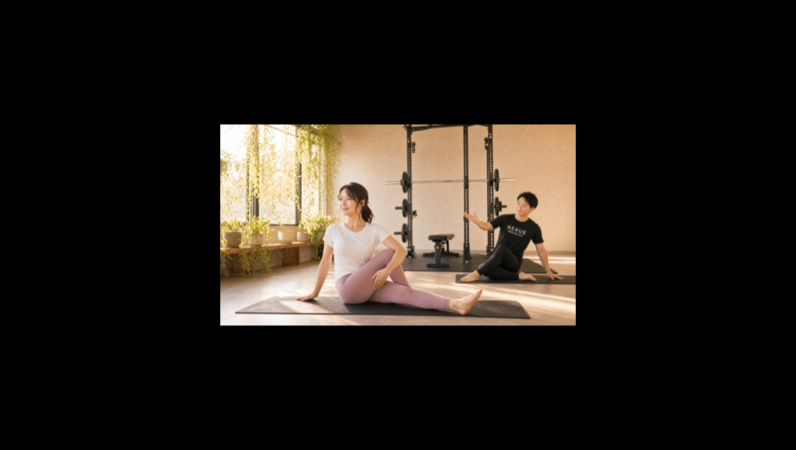
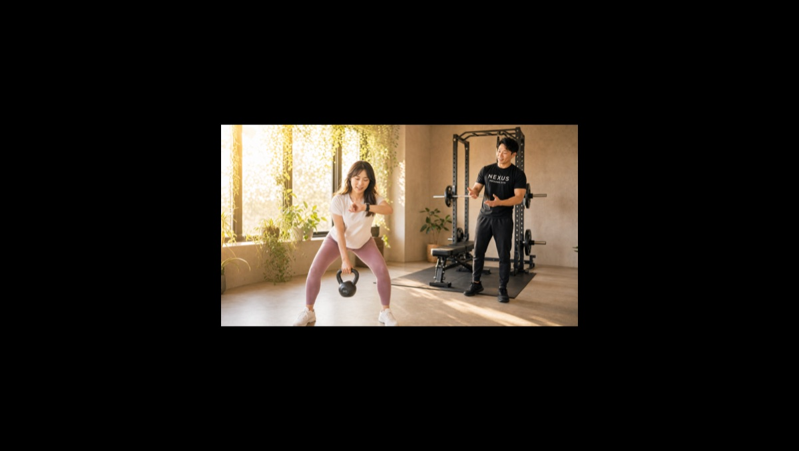
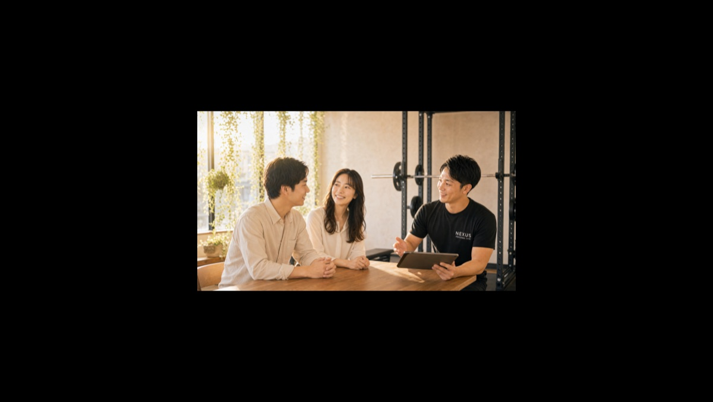

NEXUS Personal Gym ／ 大阪府茨木市
NEXUSパーソナルジム 大阪茨木市・総持寺店｜総持寺の完全個室・隠れ家ジム
阪急京都線 総持寺駅前、茨木市総持寺駅前町の完全個室パーソナルジムです。「健康診断の数値から立て直す」を軸に、体力の低下や肩こり・腰痛が気になり始めた30〜50代の男女を、年齢に合わせた無理のない指導で後押し。基礎から丁寧に体を整える指導が支持され、Google口コミ110件で★5.0を維持しています。
- 完全個室
- 健康診断の数値改善
- 年齢に合わせた指導
- 阪急京都線 総持寺駅前
- 毎日8:00〜23:00

この店舗の特徴
NEXUS大阪茨木市・総持寺店は、阪急京都線 総持寺駅前・茨木市総持寺駅前町にある完全個室パーソナルジム。この店舗が最も力を入れているのは、「健康診断の数値や、年齢とともに感じる体力の衰えを立て直したい」という方のサポートです。体重や血液検査の結果が気になり始めた、階段で息が切れるようになった、肩こり・腰痛が慢性化してきた——そんな30〜50代の男女が多く通っています。若い頃のような激しいトレーニングではなく、今の体力と年齢に合った運動と、続けられる食事の見直し。その両輪で、無理なく数値と体調を整えていきます。毎日8:00〜23:00営業、ウェア・タオル・プロテインまで無料の手ぶら通いOK。料金は1回4,500円〜（ライトコース30分・月4回18,000円）から始められます。
健康診断の結果、そのままにしない
健康診断で気になる結果が出たとき、「そのうち何とかしよう」と先延ばしにしてしまう方は少なくありません。総持寺店の口コミには「健康診断で悪い結果が出てジムを探した。基礎から丁寧に教わり、体力がつき、生活に張りが出た」という声があります。数値を改善するには、運動と食事の両輪が欠かせません。まずはフォームの基礎から。正しく体を動かせるようになると、同じ運動でも効果が変わります。食事も、いきなり極端な制限をするのではなく、日々の食べ方を少しずつ整えていく。写真を送るだけのAI食事指導（月額3,000円・税込）も活用できます。健康診断の結果は、行動を変えるきっかけ。その一歩を、総持寺駅前で踏み出しませんか。
健康診断の悪い結果をきっかけに入会しました。フォームの基礎から教わり、体力がつき、運動の習慣が身につきました。
ストレッチから始まる90分

運動から長く離れていた方や、体が硬くなっている方に人気なのが、90分のプレミアムコースです。総持寺店の口コミには「90分コースはストレッチからトレーニングまで一通りで、無理なく体を動かせる。肩こり・腰痛が楽になった」という声があります。いきなり負荷をかけるのではなく、まずはストレッチで固まった筋肉をほぐし、関節を動きやすくしてから運動に入る。だから、翌日に痛みが残りにくく、続けやすいのです。デスクワークで凝り固まった肩や、慢性的な腰の張りも、正しく動かすことで少しずつ楽になっていきます。時間をかけて丁寧に体と向き合いたい方に、90分コースはぴったりです。
90分コースでストレッチからトレーニングまで通しで見てもらえます。長年の肩こりと腰痛が気にならなくなりました。
50代からでも、体力は戻る

「もう歳だから」と諦める必要はありません。筋肉は、何歳からでも正しく鍛えれば応えてくれます。総持寺店の口コミには「50代で体力の低下を感じて入会したが、体調と年齢に合わせた優しい指導で疲れにくくなった」という声があります。大切なのは、若い人と同じメニューをこなすことではなく、今の自分の体力に合った負荷で、少しずつ積み上げること。マンツーマンだからこそ、その日の体調を見ながら強度を調整し、ケガをせずに続けられます。体力が戻ると、日常が変わります。階段が苦にならない、休日に疲れを持ち越さない、姿勢がよくなる——そんな小さな変化の積み重ねが、生活の質を確かに上げていきます。
阪急総持寺、駅前すぐ
大阪茨木市・総持寺店は、その名のとおり総持寺駅前町にあり、阪急京都線 総持寺駅から駅前すぐという通いやすい立地です。少し歩けばJR総持寺駅もあり、どちらの路線からもアクセスできます。駅前だからこそ、通勤・通学やお買い物の動線上で立ち寄りやすく、「わざわざ行く」ではなく「ついでに寄る」感覚で続けられます。毎日8:00〜23:00営業なので、朝の始業前にひと汗かいてから出勤する使い方も、仕事帰りに立ち寄る使い方も自在です。健康のための運動は、続けてこそ意味があります。駅前という近さは、その「続ける」を何より後押ししてくれます。茨木市・総持寺エリアで通いやすいパーソナルジムをお探しの方に、最適な立地です。
最初は現状把握のカウンセリングから

初めての方は、まず無料体験へ。総持寺店では、最初に「現状把握のカウンセリング」を大切にしています。健康診断の結果を持参してのご相談も歓迎です。数値のどこが気になるか、現在の生活習慣・運動歴・体力の状態、肩こりや腰痛などの体調面をていねいにうかがい、あなたに合った無理のないプログラムを設計します。そのうえで実際のトレーニングを体験し、フォームや効かせ方を確かめていただきます。相性や雰囲気を確かめてから決めていただけるので、当日入会で入会金が通常55,000円→15,000円（税込）に割引。無理な勧誘は一切ありません。阪急総持寺駅前すぐなので、まずは話だけでも気軽にお越しください。
料金プラン
入会金は通常55,000円、無料体験当日入会で15,000円（税込）に割引。AI食事指導は月額3,000円（税込）。全店舗共通の料金です。
アクセス
- 店舗名
- NEXUSパーソナルジム 大阪茨木市・総持寺店
- 住所
- 〒567-0802
大阪府茨木市総持寺駅前町6-11 ソリティア総持寺102号 - 最寄り駅
- 阪急京都線 総持寺駅（駅前すぐ）／JR総持寺駅
- 営業時間
- 毎日 8:00〜23:00
- 電話番号
- 050-1790-8496
Google口コミ★5.0（110件）
NEXUS大阪茨木市・総持寺店はGoogle口コミ110件で★5.0を維持。健康診断をきっかけにした身体の立て直しと、年齢に合わせた無理のない指導が評価されています。
※お客様の声はGoogle口コミの内容を要約して掲載しています。出典：Google マップ
50代で体力の低下を感じていましたが、年齢と体調に合わせた丁寧な指導のおかげで、疲れにくい体になってきました。
大阪茨木市・総持寺店のよくある質問
Q茨木市で健康改善目的のパーソナルジムはありますか？+
Q健康診断の結果が悪かったのですが、相談できますか？+
Q50代・60代でも通えますか？+
よくある質問（全店共通）
料金・制度などNEXUS全店に共通するご質問です。さらに詳しくは110問のFAQをご覧ください。
Q料金はいくらですか？+
Q手ぶらで通えますか？+
Qキャンセルはいつまでできますか？+
Q食事指導はありますか？+
Qトレーナーはどんな人ですか？+
NEXUSパーソナルジム公式サイトを見る